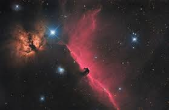

Na prática, pesquisas astronômicas modernas envolvem uma quantia substancial de trabalho em física teórica e observacional. Algumas áreas de estudo para astrofísicos incluem suas tentativas para determinar as propriedades de matéria escura, energia escura, e buracos negros
Astrofísica é o ramo da física e da astronomia responsavel por etudo do universo o universo através da aplicação de leis e conceitos da física, tais como luminosidade, densidade temperatura e composição química, a objetos astronômicos como estrelas, galáxias e o meio interestelar.
Radiofisica, fisiica do meio interplanetario,astrofisica extragalatica e etc...
